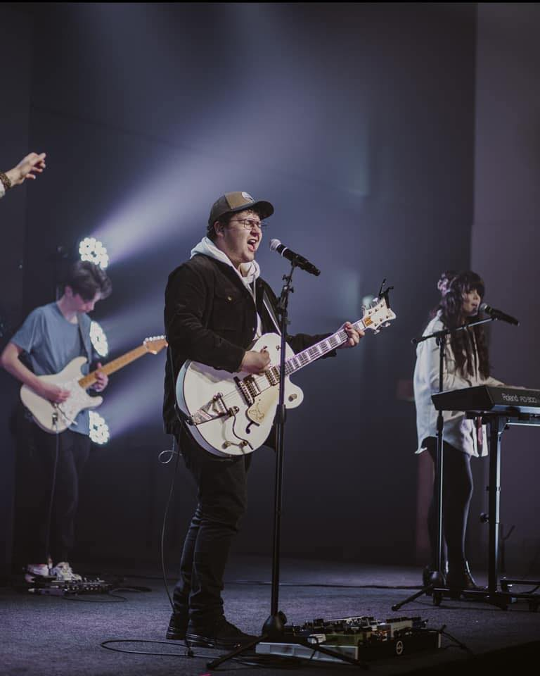

Welcome to My Portfolio
About Me
Background
I'm a creative individual who loves music and technology. I play the guitar regularly, finding it a great way to express myself and unwind. I currently live in Sioux Falls, but I grew up in Des Moines. My passion for technology is as strong as my love for music. I always try to stay updated with the latest advancements in tech. Video games are another significant interest of mine, providing both a recreational escape and a source of inspiration for my creative projects.
Growing up in Des Moines, I was surrounded by a community that valued creativity and innovation. This environment nurtured my love for the arts and technology from an early age. My journey in music began with the guitar, which has remained a steadfast companion in my life. Over the years, I've explored various musical genres, composed original pieces, and performed at local events. These experiences have enriched my understanding of rhythm, melody, and harmony, all of which play a crucial role in my creative process.
Education
I am currently pursuing a full stack certification at Coding Temple, where I am diving deep into programming languages such as Python, CSS, HTML, and JavaScript. This program is also enhancing my skills with various frameworks including Postman, Bootstrap, React Native, and MySQL. The rigorous curriculum is preparing me to tackle complex software development challenges and create dynamic web applications.
In addition to my current studies, I hold a bachelor's degree in Theology from Hillsong College in Sydney, Australia. This diverse educational background has equipped me with a unique perspective, combining technical expertise with a broad understanding of human values and ethics. My time at Hillsong College was transformative, providing me with a deep appreciation for community, leadership, and the importance of empathy in all endeavors.
Career Goals
Looking ahead, I have numerous ambitions and side projects that drive my professional journey. I am passionate about developing games that offer engaging and immersive experiences. Additionally, I am exploring the creation of audio plugins to enhance music production processes. One of my long-term goals is to establish my own company, where I can bring my innovative ideas to life and develop creative software solutions that make a difference.
In the realm of game development, I aspire to create interactive experiences that captivate and inspire players. I believe that games have the power to tell compelling stories, foster creativity, and build communities. Through my projects, I aim to push the boundaries of what's possible in gaming, leveraging cutting-edge technology to deliver unforgettable experiences. Similarly, in the field of music technology, I am dedicated to developing tools that empower artists to express their creativity with greater ease and precision. My vision for the future includes a thriving company that stands at the intersection of technology and creativity, driving innovation and making a positive impact on the world.
Personal Interests
My personal interests include music, playing the guitar, gaming, recording, mixing and mastering songs, songwriting, and setting new personal records for my Elden Ring runs. I find joy in exploring new musical styles and techniques, constantly challenging myself to grow as an artist. Gaming provides an immersive escape into fantastical worlds where I can test my skills and strategies.
I also enjoy reading about the latest developments in technology, psychology, and philosophy. These subjects broaden my horizons and provide valuable insights that I can apply to my projects. Whether it's learning a new programming language, experimenting with different recording techniques, or strategizing for a challenging game, I am always eager to learn and grow. This continuous pursuit of knowledge and improvement drives me to excel in everything I do.
Skills and Expertise
- Python: Proficient in writing clean, efficient code for various applications.
- CSS: Skilled in creating visually appealing and responsive web designs.
- HTML: Experienced in structuring web content effectively.
- JavaScript: Capable of developing dynamic and interactive web applications.
- Postman: Proficient in testing and debugging APIs.
- Bootstrap: Experienced in building responsive, mobile-first websites.
- React Native: Skilled in developing cross-platform mobile applications.
- MySQL: Capable of designing and managing robust database systems.